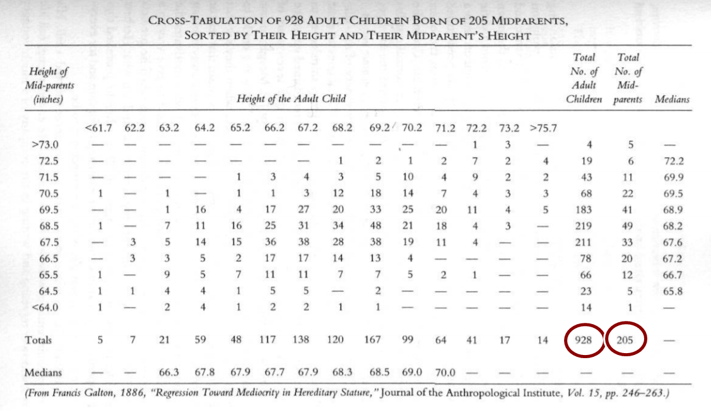
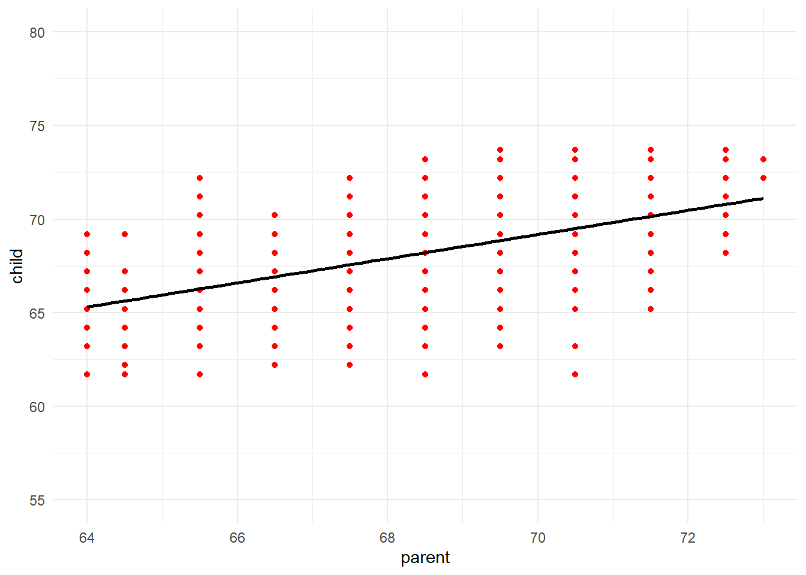

Konu 5 Francis Galton ve Regresyon Terimi
Regresyon terimi ilk kez Francis Galton tarafından kullanılmıştır.
Saymak ve ölçmek Galton’ın hobisiymiş. Bırakın hobiyi saplantı da denilebilir.
Wherever you can, count.
Yapabildiğin her yerde say. Kendisi hakkında yazılan çok şey var. Gerçekten de yapabildiği her yerde saymış.
He even made a beauty map of britain, based on a secret grading of the local women on a scale from attractive to repulsive (the low point was in aberdeen). -BBC
Sokakta yürürken karşılaştığı kızları çekicilik derecelerine göre sınıflandırmış, kız alımlıysa sol cebinde taşıdığı kartı, sıradansa sağ cebindekini işaretlermiş. Böyle böyle İngiltere’nin güzellik haritasını çıkarmış ve Londralı kızlar en yüksek puanı; Aberdeenli kızlar ise son sırayı almış.
Kurduğu Galton Antropometrik (antropolojik ölçüm) Laboratuvarı’nda parmak izleri dahil insan vücuduyla ilgili mümkün olan her ölçümü yapmış, bu ölçümlerin yelpazesini ve karakterini izleyerek kaydını tutmuş. Parmak izleri Galton’ı büyülüyormuş. Nedeni ise vücudun diğer kısımlarından farklı olarak parmak izlerinin şeklinin kişi yaşlansa da hiçbir zaman değişmemesi. Galton bu konuda 200 sayfalık bir kitap yayınlamış ve bu çalışması kısa zamanda polisin parmak izini yaygın biçimde kullanmasına öncülük etmiş.
Galton, Britanya Bilimi İlerletme Birliği Başkanlığı’na seçilmesi sebebiyle bir konuşma yapar ve bu konuşma sırasında gerçekleştirdiği bir deneyde ortalamaya dönüşü destekleyen yeni kanıtlar bulduğunu açıklar. Bu deney için ise kendisine veri sağlayacak kişilere nakit ödeme yapacağını ilan eder ve insanlarla ilgili muazzam miktarda veri toplar: 205 ebeveynden doğmuş 928 yetişkin çocuk.

R ile verilere ulaşabilmek mümkündür.
library(HistData);library(tidyverse)
Galton %>%
ggplot(aes(x=parent, y=child)) +
geom_point(color="red") +
geom_smooth(method = "lm", color="black", se=FALSE) +
scale_y_continuous(limits = c(55,80)) +
theme_minimal()
Gözlemleri inceleyebilmek için kadınlar ve erkekler arasındaki boy farklarıyla ilgili bir düzeltme yapar. Bunun için bütün annelerin boylarını 1.08 ile çarpar, ardından da anne ve babaların boylarını toplayıp ikiye böler. Elde ettiği birime de orta ebeveyn boyu adını verir. Tabi bu arada uzunlar uzunlarla, kısalar kısalarla evleniyor gibi bir eğilim var mı diye de hesaplamalar yapar ama böyle bir eğilimin bulunmadığını varsayacağı noktaya yeterince yakındır.
Tabloda… Sayıların sol alt köşeden sağ üst köşeye çarpraz bir yapı segilediğini görüyoruz. Yani, uzun boylu ebeveynlerin uzun boylu, kısa boylu ebeveynlerin de kısa boylu çocukları olduğunu gösteriyor: Kalıtım. Büyük sayıların ise tablonun ortasında toplandığı görülebilir. Bu ise her boy grubunun çocuklar arasında normal dağıldığını, aynı şekilde aynı ebeveynlerle ilgili her boy grubundan her çocuk dizisinin de, normal bir dağılım gösterdiğini söyler.
I never felt such a glow of loyalty and respect towards the sovereignty and magnificent sway of mathematical analysis.
Matematiksel analizin hükümranlığına ve muhteşem ruhuna hiç bu kadar derin bir bağlılık ve saygı duymamıştım der Galton.
O bizi günlük yaşama, insanların soluk aldığı, terlediği, cinsel ilişkide bulunduğu ve geleceğinden endişelendiği dünyaya götürür. Artık daha önceki matematikçilerin teorilerini doğrulama aracı olarak kullandıkları kumar masalarından da, yıldızlardan da uzaklaşmış bulunuyoruz. Galton, teorileri bulduğu şekilde ele almış ve onları neyin önemli kıldığını keşfetmeye çalışmıştır.